Panel de análisis del cliente
El CRM permite ver de forma inmediata los pedidos por año y la facturación anual del cliente. Esto ayuda a medir recurrencia, valor comercial y evolución económica de cada cuenta.
Esta solución CRM está pensada para talleres de joyería que necesitan ordenar su operación diaria, dar seguimiento real a cada pedido, centralizar la información del cliente y visualizar el estado del negocio con datos claros.
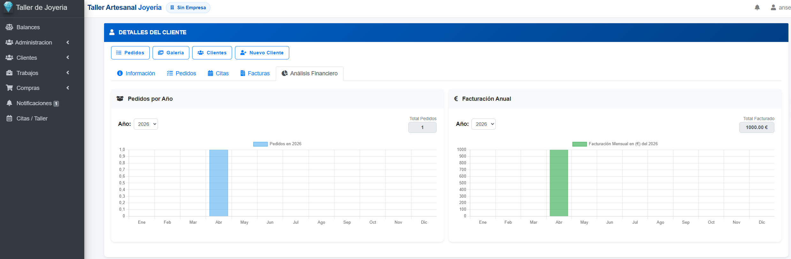
La web comercial ahora comunica mejor que la plataforma puede utilizarse desde distintos dispositivos. Hemos añadido composiciones visuales con versión tablet y móvil usando capturas reales de la aplicación.
La versión tablet conserva el contexto visual del CRM, mostrando menús, cabeceras, acciones y bloques de información con claridad. Es ideal para enseñar pedidos al cliente, revisar el estado del trabajo en mesa o moverse por el taller con mayor flexibilidad.
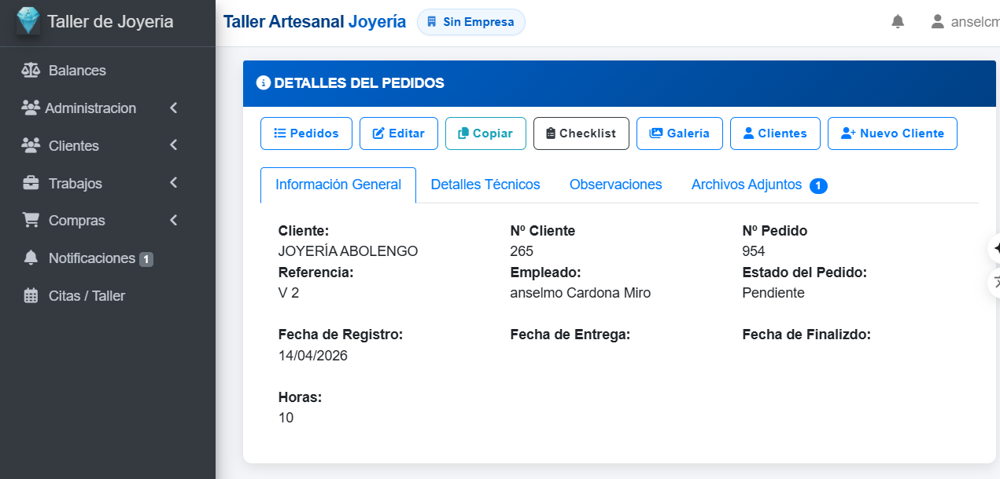
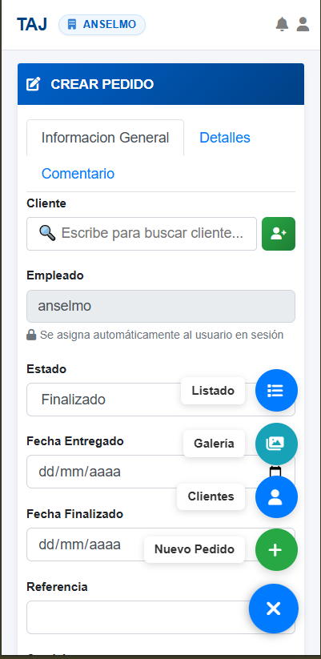
La interfaz móvil permite crear pedidos, buscar clientes, consultar estados y navegar por las áreas principales con accesos flotantes y menú lateral optimizado. Esto facilita trabajar fuera del escritorio, responder rápido y mantener el control del negocio en cualquier momento.
Cada apartado responde a una necesidad concreta del negocio: captar clientes, gestionar pedidos, controlar producción, organizar citas, registrar compras y seguir la rentabilidad.
Registra clientes particulares y empresas, centraliza datos de contacto, histórico, pedidos, citas y facturas, y consulta la ficha del cliente sin salir del flujo comercial.
Crea pedidos, asigna empleado, controla fechas de entrega y finalización, consulta referencias y accede a checklist, observaciones, detalles técnicos y archivos adjuntos.
Organiza el trabajo por fases: recepción, tallas y medidas, metales del cliente, piedras, diseño, producción, control de calidad y entrega.
Filtra imágenes por cliente, tipo de pedido, metal, referencia y estado para encontrar rápidamente trabajos activos o finalizados con soporte visual.
Programa citas de taller, organiza visitas comerciales y vincula reuniones a pedidos o clientes para no perder contexto en la atención.
Consulta pedidos por año, facturación anual, análisis financiero del cliente y balance de pagos y beneficios para una gestión más rentable.
Aquí se muestra el sistema tal como se utiliza en la práctica, con pantallas enfocadas en relación con clientes, pedidos, producción, imágenes, compras, administración y usuarios.
El CRM permite ver de forma inmediata los pedidos por año y la facturación anual del cliente. Esto ayuda a medir recurrencia, valor comercial y evolución económica de cada cuenta.
Cada pedido reúne cliente, referencia, fechas, empleado responsable, estado, horas y acceso directo a editar, copiar, checklist, galería y archivos. Es el centro operativo del trabajo diario.
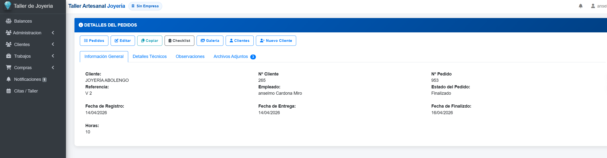
El CRM estructura el avance del taller por etapas para que cada pedido tenga control documental y operativo desde la recepción hasta la entrega final.
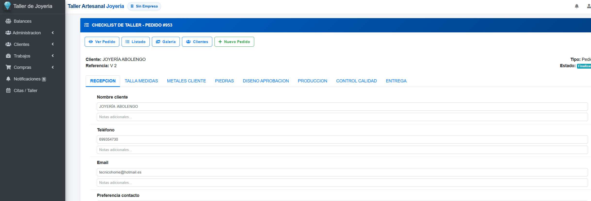
Alta rápida de nuevos trabajos con cliente, empleado, servicio, estado y fechas clave para iniciar el proceso comercial y productivo con orden.

Gestiona tu trabajo diario de forma ágil: ver pedidos, duplicarlos, abrir checklist, editar, programar citas o facturar en segundos. Pensado para autónomos que necesitan rapidez y control sin complicaciones.

La ficha del cliente concentra nombre, dirección, teléfono, email, fecha de alta y acceso a pedidos, citas, facturas y análisis financiero.
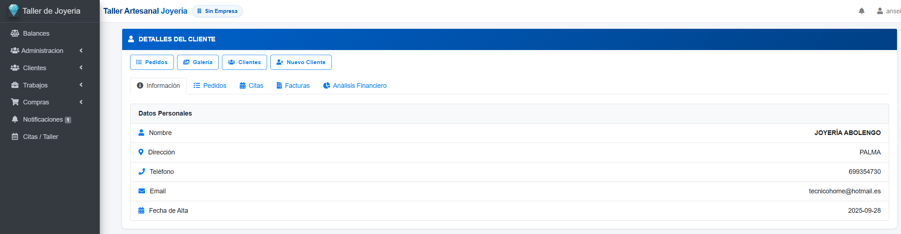
El CRM contempla distintos tipos de clientes para adaptarse a ventas directas y cuentas corporativas, manteniendo estructuras diferenciadas de información.
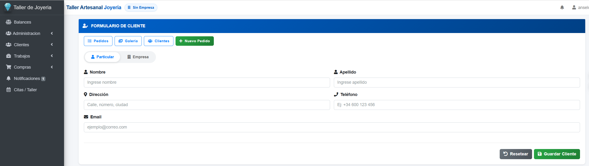
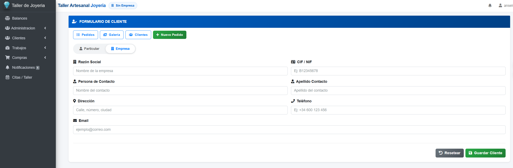
Una parte diferencial del CRM es su gestión visual: localiza rápidamente piezas y trabajos por cliente, tipo, metal, estado, referencia o rango de fechas.
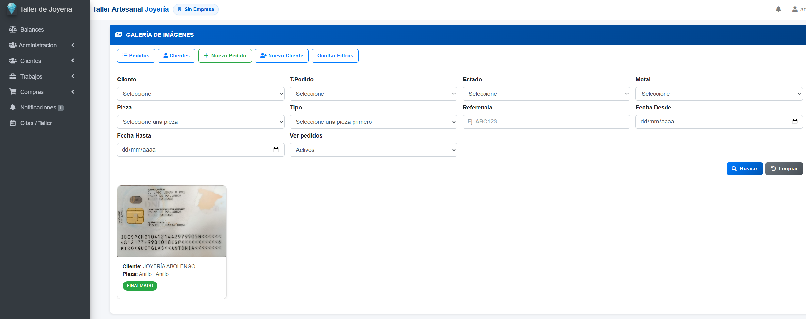
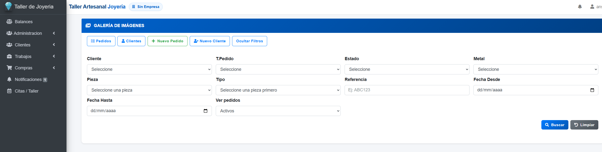
La agenda de citas ayuda a ordenar reuniones, entregas, visitas de seguimiento y atención al cliente dentro del propio CRM.
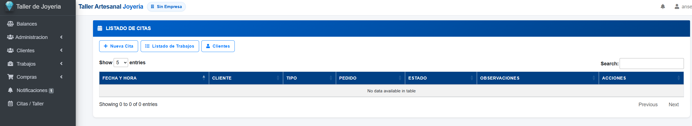
Módulo preparado para consolidar la lectura financiera del negocio y complementar la parte comercial con información de rentabilidad.
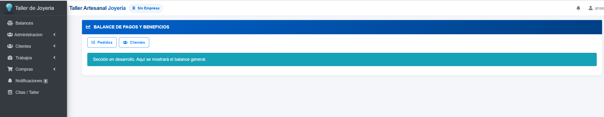
El CRM también soporta la parte de abastecimiento con formularios para materiales y proveedores, lo que mejora trazabilidad y control de stock.
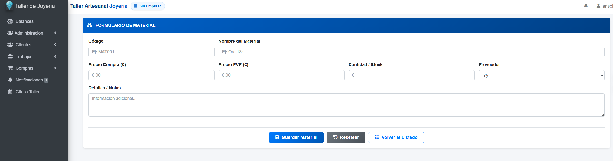
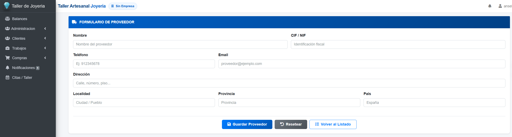
La plataforma incorpora administración interna para definir roles, dar de alta usuarios y controlar permisos según la función de cada miembro del equipo.
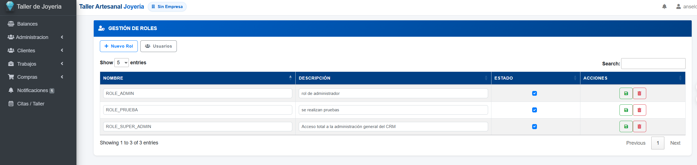
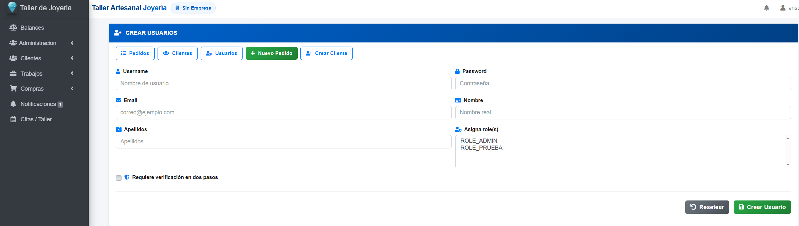
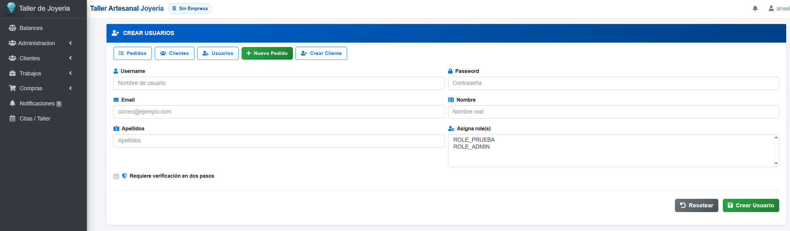
Aquí puedes insertar un vídeo de presentación donde se vea el recorrido real: alta del cliente, creación del pedido, checklist del taller, seguimiento por estados, galería visual, cita comercial y generación de factura.
Puedes presentar el sistema con acceso guiado. El botón puede enlazar a la demo real, a un subdominio o a una instalación de pruebas del CRM.
Ideal para talleres artesanales, joyerías con producción propia, negocios con encargos personalizados y equipos que necesitan más control comercial y operativo.